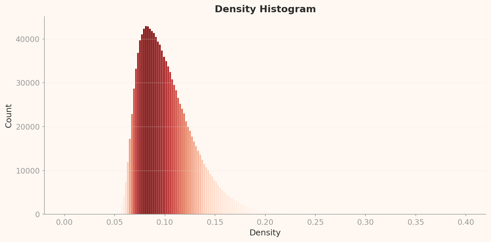

2026.04 · Pebblous Data Communication Team
Reading time: ~22 min · 한국어

Executive Summary
ImageNet is the most influential dataset in AI history. When AlexNet swept the ILSVRC competition in 2012 using this dataset, it ushered in the deep learning era. Yet DataClinic's diagnosis score of 60 ("Fair") only captures the technical surface. Buried within 1,431,167 images are an estimated 85,870 mislabeled samples, extreme pixel clipping, and a strange density distribution dominated by peacocks and tarantulas.
In 1,280-dimensional embeddings, peacocks account for 83% of the highest-density region (10 of the top 12 samples). After dimensionality reduction to 122 dimensions, tarantulas take their place. Mousetraps and upright pianos become nearest neighbors; shovels and toilet seats land in the same cluster. This is how the machine sees the world — and this vision has been transferred to every AI model for a decade.
DataClinic's diagnosis precisely measures formal integrity and statistical properties, but label accuracy, cultural representativeness, and the adequacy of the semantic taxonomy fall outside its diagnostic scope. The fact that these out-of-scope issues are far more damaging in ImageNet's case simultaneously demonstrates both the value and the limitations of automated data quality diagnosis.
L1: What the Pixels Say
Level 1 is a pixel-level physical exam. DataClinic evaluates four areas: image integrity, missing values, class balance, and statistical measurement. On the surface, ImageNet looks solid. All 1,431,167 images are present with zero missing values, 98.43% are RGB, and 1,000 classes hold an average of 1,281.2 images each in a near-uniform distribution. But behind these numbers lies a story the API does not tell.
| Metric | Grade | Details |
|---|---|---|
| Image Integrity | Good | RGB 98.43%, Grayscale 1.57% (22,469 images), RGBa 0.0% |
| Missing Values | Good | No missing values |
| Class Balance | Nominally OK | Mean 1,281.2 images, std 70.2, range 732 to 1,300 |
| Statistical Measurement | Poor | Low image diversity — extreme pixel clipping detected |
The Semantic Imbalance of 120 Dog Breeds
DataClinic rated class balance as "Good." Numerically, it is. Each class holds between 732 and 1,300 images with a standard deviation of 70.2. The smallest class still has 56% of the largest — hardly an extreme imbalance. But this verdict only considers quantity.
Of the 1,000 classes, 120 (12%) are dog breeds. Siberian Husky vs. Alaskan Malamute, Norfolk Terrier vs. Norwich Terrier, Yorkshire Terrier vs. Silky Terrier — breeds that even professional veterinarians struggle to tell apart from photos alone, each assigned its own class. The remaining 880 classes must cover everything from musical instruments to furniture, food, vehicles, and landscapes. In effect, the dataset demands that the model become a canine specialist while simultaneously being a generalist.
The DataClinic API rates class balance as "Good," but this reflects only numerical balance. It does not capture the semantic imbalance of 120 out of 1,000 classes (12%) being dog breeds. How many people can distinguish all 120 breeds? This structural bias results from mechanically following WordNet's biological taxonomy, and lies outside the scope of DataClinic's automated diagnosis.
Blue Channel 255: The Secret of 1.6 Billion Pixels
DataClinic rated statistical measurement as "Poor." But it does not explain why. The pixel histogram below provides the answer.
The first thing that jumps out is the extreme spikes at both ends. Blue channel at pixel=255 records approximately 1.6 billion occurrences — four to five times the mid-range (50-200) frequency. At pixel=0, Blue spikes to about 830 million, Green to 680 million, and Red to 350 million.
What the pixel=255 spike means: a massive number of fully bright pixels exist. The fact that the Blue channel is disproportionately high reflects a background bias from internet images — blue skies and water surfaces. While white backgrounds (R=G=B=255) contribute to all three channels equally, the consistently higher Blue signal across the entire range points to additional blue-color bias. The pixel=0 spike is a fingerprint of black backgrounds, padding, letterboxing, and JPEG compression artifacts.
This clipping at both extremes is a characteristic problem of web-crawled images. Camera auto-exposure systems clip bright skies and dark shadows; JPEG compression amplifies extreme values. At the scale of 1,431,167 images, this bias creates a risk of models overfitting to brightness extremes.
The DataClinic API simply rates statistics as "Poor" without citing the specific evidence: the approximately 1.6 billion pixel spike at Blue channel pixel=255, or the approximately 830 million spike at pixel=0. It also omits the consistent Blue > Green > Red ordering across the entire range — a direct indicator of sky and water background bias in internet images. This single chart holds the complete explanation for the "Poor" rating.
Resolution: From 20x17 to 7,056x4,488
The range of image sizes is extreme. The smallest, at 20x17px, is practically unrecognizable, while the largest, at 7,056x4,488px, is a high-resolution DSLR photograph. This 400x resolution gap is an inevitable consequence of web crawling, but it is precisely why resolution standardization (typically 224x224px) is essential during training.
Additionally, 1.57% of images are Grayscale. A small percentage, but in absolute terms that amounts to approximately 22,469 images. Standard models that assume RGB 3-channel input (AlexNet, ResNet, VGG, etc.) require channel duplication or special preprocessing for these images. DataClinic flagged "channel attention required," but the scale of 22,469 images is not conveyed by the percentage alone.
L2: Through General AI's Eyes — A 1,280-Dimensional World
Level 2 transforms each of the 1,431,167 images into a 1,280-dimensional vector using Wolfram ImageIdentify Net V2. This is the stage where we observe ImageNet not through human eyes, but through those of a general-purpose AI. The results are full of counterintuitive discoveries.
PCA Distribution of Class-Mean Feature Vectors
Projecting the mean feature vector of each of the 1,000 classes into 2D PCA reveals how classes distribute in the embedding space at a glance. Each point in the chart below represents one class, and points that lie close together are classes the neural network judges to be visually similar.

Density Distribution: The Peacock Dominion
The L2 density histogram shows a strongly right-skewed unimodal distribution. The peak is at approximately 0.085 density with about 43,000 counts. Most images concentrate in the 0.05-0.15 density range, with a long right tail extending to 0.40. DataClinic rated this as "Distribution: Good," but given the right skew and extreme outliers, that seems generous.

The most striking discovery in this distribution is the identity of the high-density outliers. Of the top 12 samples by density, 10 are peacocks. Their density ranges from 0.322 to 0.344 — roughly four times the peak (0.085). The remaining two are titi (a South American monkey) and patas (a hussar monkey) — both primate classes with highly uniform visual appearance.
Why peacocks? Search for "peacock" on the internet and the answer is obvious. Nearly every image shows a peacock with its tail feathers fully fanned out in essentially the same composition. This extreme visual uniformity forms a tightly packed cluster in the 1,280-dimensional embedding space. The peacock is one of the most repetitively photographed subjects on the internet, and this dataset has directly inherited that visual bias.
High-Density Outliers: Peacocks and Primates
Below are the top-density images at L2. The visual uniformity of peacocks is obvious even to the naked eye.


Batch bias observation: 10 of the top 12 high-density samples belong to the peacock class. The extreme visual uniformity of peacock images — nearly identical compositions of fanned tail feathers — creates a dense cluster in the embedding space. This is not a data error but a structural characteristic of internet image collection.
Low-Density Outliers: Flutes and Lens Caps
At the opposite extreme — the lowest-density images — we find exclusively artifact classes. Flute (0.023), lens cap (0.026), espresso maker (0.026). The reason these classes have low density is intuitive: they are photographed from diverse angles, contexts, and backgrounds, causing them to scatter widely across the embedding space.


A flute can be photographed lying flat, standing upright, or nestled in its case. Lens caps vary wildly in size, color, and brand. Espresso makers range from chrome commercial machines to stovetop Moka pots. These are classes that are inherently "hard to define visually" — the exact opposite of the peacock's visual uniformity.
Density Topography: The Landscape of Clusters
The 2D density topography map shows where images cluster densely and where they scatter sparsely in the embedding space, using contour lines. Red/yellow regions represent high-density clusters, while blue/purple regions mark low-density areas.

L3: Reading Meaning with AI — Precision at 122 Dimensions
Level 3 applies a 122-dimensional lens optimized for the ImageNet dataset, built on the same Wolfram ImageIdentify Net V2 backbone. Compressing from 1,280 to 122 dimensions — roughly a 10x reduction — preserves only the features most effective for class discrimination. Where peacocks dominated at L2, an entirely different class emerges at L3.
L3 PCA: Sharper Cluster Boundaries
Running PCA on the 122-dimensional embeddings reveals sharper inter-class boundaries than L2. The dimensionality reduction has stripped away noise and amplified class-discriminating features.

Density Distribution: The Rise of the Tarantula
The L3 density histogram shares the same right-skewed unimodal shape as L2, but the scale is entirely different. The peak sits at approximately 0.575 density with about 27,000 counts. Compared to L2's peak (density 0.085, 43,000 counts), overall density has risen while the peak count has fallen — images have dispersed across a wider density range.

Of the top 12 high-density L3 samples, 10 are tarantulas and the remaining 2 are golf balls. Tarantulas have displaced peacocks from L2's throne. This switch is one of the most fascinating findings in this story.
Why tarantulas? As the 122-dimensional reduction preserves class-discriminating features, the tarantula's visual signature — dark body, radially extending legs, high contrast — emerges as an extremely compression-efficient pattern. Golf balls follow the same logic: a white sphere with dimples is a simple, repetitive visual structure. What both classes share is simple, repetitive visual patterns, high contrast, and consistent camera angles.


L2 vs L3: What Dimensionality Reduction Changes — and What It Cannot
Comparing the two levels reveals both the power and the limits of dimensionality reduction.
| Comparison | L2 (1,280 dims) | L3 (122 dims) |
|---|---|---|
| Density Peak | ~0.085 (43,000 counts) | ~0.575 (27,000 counts) |
| Dominant High-Density Class | peacock (10/12) | tarantula (10/12) |
| Lowest-Density Outlier | flute (0.023) | lens cap (0.146) |
| Low-Density Class Composition | Artifacts: flute, lens cap, espresso maker | Same classes persist |
| DataClinic Verdict | Geometry: Good, Distribution: Good | Geometry: Good, Distribution: Good |
What dimensionality reduction changes: the dominant high-density class (from peacock to tarantula). What it cannot change: the composition of low-density outliers (flute, lens cap, and espresso maker remain outliers regardless of dimensionality). This means the visual inconsistency of these classes is an intrinsic property that does not depend on the number of dimensions.

Class Confusion: The 120 Dog Breed Dilemma
The fact that 120 of ImageNet's 1,000 classes are dog breeds is well known, but its concrete impact on model training is rarely discussed. DataClinic's similarity analysis surfaces unexpected findings here — not confusion between dog breeds, but entirely different objects ending up in the same cluster.
Mousetrap and Upright Piano: The Affinity of Wood and Metal
In DataClinic's similarity analysis, the mousetrap's nearest neighbor turned out to be the upright piano and the laptop. To humans, these three objects belong to entirely different categories, but the neural network determined they share the visual pattern of "wooden frame + metal mechanism + rectangular structure."


Shovel, Plunger, Toilet Seat: The World of Long Handles
The shovel's nearest neighbors were the plunger and the toilet seat. The shared visual pattern: "long handle + circular/oval shape at the end." A case where the visual category of "tools with handles" transcends the semantic category.


Vacuum, Lawn Mower, Tractor: The Wheeled Machine Club
A newly discovered similarity pair at L3 (122 dimensions). The vacuum's nearest neighbors are the lawn mower and the tractor. The visual pattern of "wheeled machine" becomes more prominent in L3's compressed dimensions. This pair did not appear at L2 — evidence that dimensionality reduction weighted the "wheels + machine" features more heavily.


The message from these similarity pairs is clear. Neural networks understand the world through visual patterns, not meaning. If the frame is wooden, a mousetrap and a piano live in the same neighborhood. This worldview has been transferred to thousands of AI models over the past decade through ImageNet pre-training. Every model that inherits ImageNet weights through transfer learning adopts "shovels and toilet seats are similar" as a default assumption.
120 Dog Breeds: Boundaries Even Humans Cannot Draw
The 120-dog-breed problem in ImageNet is a different kind of challenge from the cross-class confusion above. Siberian Husky vs. Alaskan Malamute, Norfolk Terrier vs. Norwich Terrier — the visual differences between these breeds are practically indistinguishable to non-experts. This is the result of mechanically following WordNet's biological taxonomy, but in practice it demands that the model earn a "canine specialist certification."
With roughly 1,281 images allocated to each of these 120 breeds, approximately 153,720 images (10.7%) of the entire dataset are dogs. A significant share of the model's learning capacity goes to distinguishing dog breeds, while the remaining 880 classes (instruments, furniture, food, vehicles, and the rest of human life) receive proportionally less.
Classic Confusion Pair: Tench vs Goldfish
A textbook case of ImageNet confusion. The majority of tench (a freshwater fish) images show an angler holding the fish in their hands. The model learns not to identify "tench" but to recognize the context of "a fish held in an angler's hands." Goldfish images, by contrast, are dominated by fish in glass bowls. The shooting context becomes a stronger signal than biological differences — a classic case of Context Bias.

Tench mean image
Held in angler's hands

Goldfish mean image
Inside a glass bowl
The difference between the two fish mean images reflects shooting environment more than biological difference.
Sports Car vs Convertible: A Classification Without Boundaries
A convertible is a subtype of sports car. A sports car with its roof down can simultaneously belong to both classes. In ImageNet, this pair has one of the highest confusion rates, and their mean images look nearly identical.

Sports Car

Convertible
The two class mean images are virtually indistinguishable by eye. The model struggles just as much.
Label Noise: The Reality of 85,870 Images
Six percent sounds small. But translate it into absolute numbers and the story changes. Northcutt et al. (2021, Cornell AI Lab) reported an approximately 6% label error rate in the ImageNet validation set. Apply that rate to the full 1,431,167 images and you get an estimated 85,870 mislabeled images.
85,870 images. That is larger than the entire dataset of many small-scale AI projects. These mislabeled images were fed as "ground truth" to thousands of AI models over the past decade. Every model that uses ImageNet pre-trained weights through transfer learning — ResNet, VGG, EfficientNet, and even early CLIP — inherited these errors as defaults.
DataClinic's score of 60 reflects only formal integrity (file presence, label mapping, channel consistency) and statistical properties (distribution, geometry). Label accuracy (6% error rate), cultural representativeness (Western-centric images), semantic taxonomy adequacy (120 dog breeds), and privacy concerns (human images, some removed after 2019) all fall outside the diagnostic scope. Therefore, 60 is a "best case" score, and the actual data quality is likely lower when these out-of-scope issues are factored in.
Three Types of Label Error
ImageNet's label errors are not simple mistakes but reflections of structural problems. Three primary types stand out.
- Multi-label problem — When an image contains multiple objects, which one is the correct label? An image of a dog with a frisbee cannot have just one right answer between "Labrador Retriever" and "Frisbee." Since ImageNet permits only a single label, structural ambiguity is inevitable.
- Hierarchical label ambiguity — "Persian cat" and "tabby" can both apply simultaneously. A Persian cat with tabby stripes fits both classes. WordNet's hierarchical structure does not resolve this ambiguity.
- WordNet homonyms — "Cardigan" refers to both a garment (a knit top) and a dog breed (Cardigan Welsh Corgi), causing label confusion. "Stretcher" has the same problem: a medical stretcher vs. a canvas frame.
The label noise paradox: ResNet trained on ImageNet with its 6% label error rate achieved 97%+ accuracy. With sufficient data scale, a certain level of label noise naturally averages out during training. But this does not mean label quality can be neglected. In small-scale domain-specific datasets, label noise is lethal, and even in large-scale datasets, the accumulation of bias propagates through transfer learning.
Data Leakage: 12,195 Duplicate Pairs
Beyond label errors, Barz & Denzler (2020) discovered 12,195 near-duplicate image pairs in ImageNet. These include different crops of the same image, burst shots, and mirrored versions. When such duplicates exist across the training and validation sets, model performance is overestimated — a classic Data Leakage problem.
DataClinic's Data Diet recommendation targets these duplicate images most directly. However, DataClinic also reported "no label consistency issues." This means it checked whether file-name-to-class mappings exist and are consistent — not whether the labels actually match the image content. Users risk misinterpreting "no label issues" as "labels are accurate."
ImageNet's Legacy and Limits
Without ImageNet, there would have been no deep learning revolution. Released by Fei-Fei Li's research team in 2009, this dataset ignited the deep learning era when AlexNet slashed the ILSVRC Top-5 error rate from 26.2% to 15.3% in 2012. Every landmark model that followed — VGGNet (2014), GoogLeNet (2014), ResNet (2015) — was validated on ImageNet, and its pre-trained weights became the standard for transfer learning.
Yet this legacy casts a shadow. ImageNet's biases — Western-centric imagery, the quality limitations of Amazon Mechanical Turk labeling, the 120-dog-breed skew, the 6% error rate — have been "baked into" thousands of pre-trained models over the past decade. Every model that adopts ImageNet weights through transfer learning inherits these biases.
The Evolution of AI Data: 2009-2026
The journey from ImageNet to Physical AI data reveals three transitions. First, the liberation of labels — from manual annotation (ImageNet) to weak supervision and self-supervised learning. Second, from closed to open world — from 1,000 fixed classes to an unlimited open vocabulary. Third, from digital to physical — from photographs to force, resistance, and tactile data. But no matter how the paradigm shifts, the importance of the question "What's wrong with my data?" remains constant.
Recommendations
DataClinic made two recommendations: Data Diet (removing high-density duplicates) and Data Bulk-Up (augmenting low-density regions). These are reasonable, but ImageNet's fundamental issues call for additional measures.
1. Semantic Class Restructuring
Consolidate the 120 dog breeds into a hierarchical "dog" superclass, and reallocate the freed capacity to underrepresented categories such as artifacts, scenes, and actions. The current structure mechanically follows WordNet's biological taxonomy; it should be redesigned around visual distinguishability.
2. High-Density Cluster Diet
Selectively remove visually near-identical images from extreme high-density classes like peacock, tarantula, and golf ball. DataClinic's density-based outlier analysis can effectively guide this process. However, applying Bulk-Up on top of 85,870 mislabeled images means piling more data on incorrect labels — label correction must precede augmentation.
3. Label Refinement Pipeline
Apply automated label cleaning tools such as Confident Learning (Northcutt et al.) or CleanLab to identify and correct high-confidence mislabels. Priority areas include the multi-label problem (dog + frisbee) and WordNet homonyms (cardigan).
4. Low-Density Class Augmentation
Add images from diverse angles, contexts, and backgrounds to visually hard-to-define low-density classes like flute, lens cap, and espresso maker. Synthetic images (e.g., from Stable Diffusion) can help, but the distributional bias of synthetic data must be independently validated.
5. Pixel Clipping Preprocessing
Build a preprocessing pipeline targeting the 1.6 billion pixel spike at Blue channel pixel=255 and the 830 million spike at pixel=0. Mitigating these clipped extremes through histogram normalization can reduce the risk of models overfitting to brightness extremes.
Diagnostic Summary
| Item | Result | Critical Reinterpretation |
|---|---|---|
| Overall Score | 60 (Fair) | Technical surface only. Label errors and bias not reflected. |
| Class Balance | Nominally OK | Numerically balanced, semantically skewed (120 dog breeds = 12%). |
| Statistical Measurement | Poor | Blue 255 clipping 1.6B, pixel=0 clipping 830M. |
| L2 High-Density Dominant | peacock 10/12 | Direct evidence of visual uniformity in internet images. |
| L3 High-Density Dominant | tarantula 10/12 | Compression-efficient patterns surface after dimensionality reduction. |
| Label Errors (External) | ~6% (85,870 images) | Outside DataClinic's scope. Sets the floor for actual quality. |
| Improvement Direction | Diet + Bulk-Up | Sound approach, but label correction must come first. |
Why Pebblous follows this dataset
ImageNet is a textbook case where sheer scale — 1,431,167 images — has long masked underlying quality issues. The 1.6 billion Blue-channel pixel clipping, peacock and tarantula density dominance, and the semantic bias of 120 dog breeds all operate at a scale that manual review cannot reach.
Every issue DataClinic diagnoses — density-based outliers, inter-class distribution imbalance, pixel-level statistical bias — was confirmed in this dataset. The larger the data grows, the more impossible it becomes to uncover these problems without automated quality diagnosis.